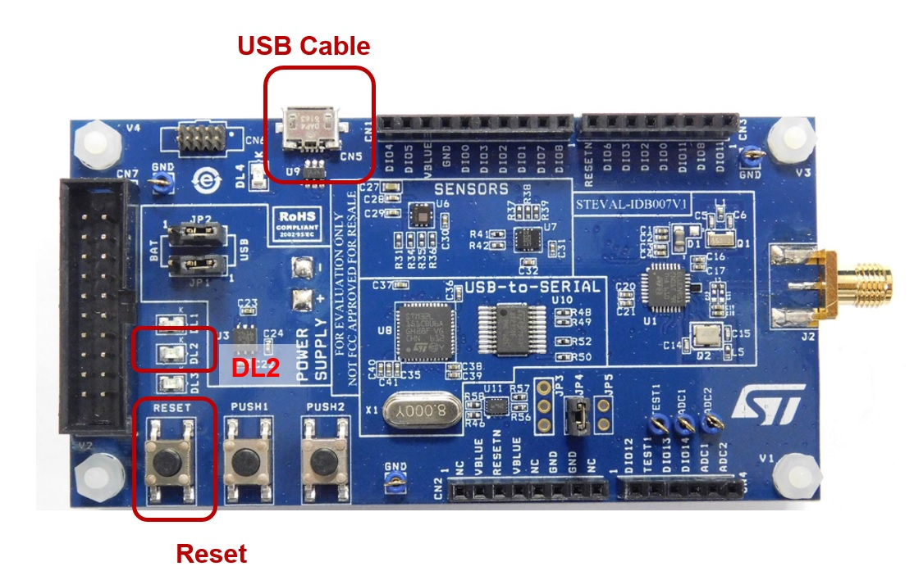
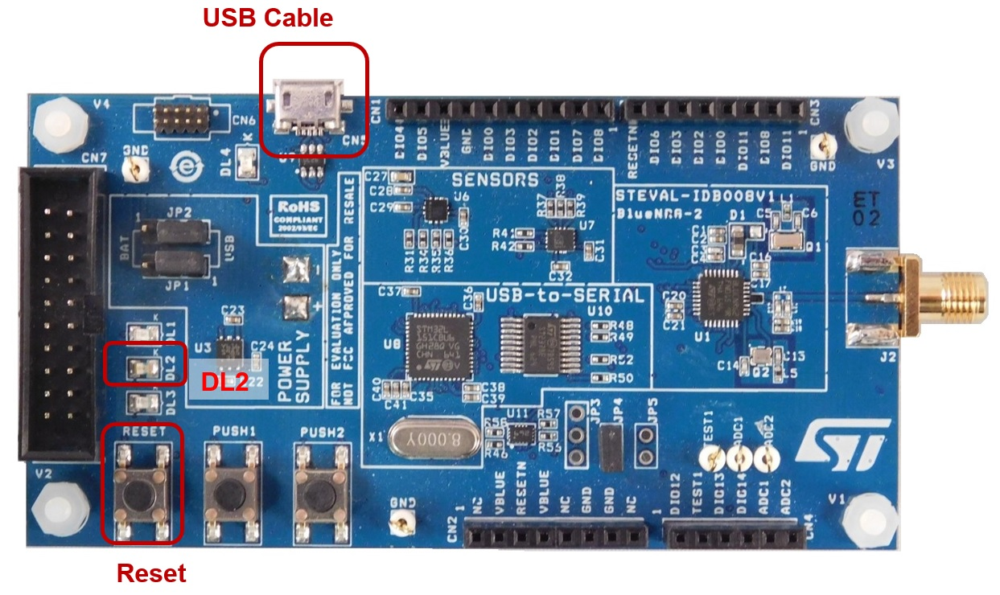

This document contains the guidelines for updating the USB-to-SERIAL FW on BlueNRG-1, STEVAL-IDB007Vx (x = 1,1M,2), BlueNRG-2, STEVAL-IDB008Vx (x = 1,1M,2), STEVAL-IDB009Vx (x = 1) platform with the USB_to_SERIAL.hex binary file available on latest BlueNRG-1_2 DK SW package.
This procedure must be applied only one time on the selected platform, in order to align to the latest version of USB_to_SERIAL.hex binary file.
Introduction
- The STEVAL-IDB007Vx (x = 1,1M,2)/STEVAL-IDB008Vx (x = 1,1M,2)/STEVAL-IDB009Vx (x = 1) USB-to-SERIAL component allows to interface a BlueNRG-1/BlueNRG-2 device to a USB host device (e.g., a PC).
- The USB-to-SERIAL component has two firmware applications:
-
Device Firmware Upgrade (DFU) application that allows performing USB-to-SERIAL firmware upgrade via USB port.
-
The USB-to-SERIAL firmware that handles the communication between the BlueNRG-1 evaluation board and a PC.
USB-to-SERIAL FW version check procedure
- In order to check USB-to-Serial firmware version, user must follow these steps:
-
Connect the STEVAL-IDB007Vx (x = 1,1M,2)/STEVAL-IDB008Vx (x = 1,1M,2)/STEVAL-IDB009Vx (x = 1) to a PC USB port
-
Open the BlueNRG-1,2 Flasher utility
-
Select the Port related to the plugged platform
-
STEVAL-IDB007Vx (x = 1,2) platform : from Select file button, select the DTM_UART.hex binary file available on Firmware\BLE_Examples\DTM\BlueNRG-1 folder
-
STEVAL-IDB007V1M platform : from Select file button, select the DTM_UART.hex binary file available on Firmware\BLE_Examples\DTM\STEVAL-IDB007V1M folder
-
STEVAL-IDB008Vx (x = 1,2), STEVAL-IDB009Vx (x = 1) platforms : from Select file button, select the DTM_UART.hex binary file available on Firmware\BLE_Examples\DTM\BlueNRG-2 folder
-
STEVAL-IDB008V1M platform : from Select file button, select the DTM_UART.hex binary file available on Firmware\BLE_Examples\DTM\STEVAL-IDB008V1M folder
-
Press on Flash for downloading the selected image
-
Once the image download and verify process is completed, open the BlueNRG GUI PC application available on STSW-BNRGUI SW package
-
Select the COM port associated to the plugged platform and press Open button
-
The Motherboard FW version provides the USB-to-SERIAL FW version
How to perform USB-to-SERIAL firmware upgrade
- In order to perform USB-to-Serial firmware upgrade, user must follow these steps:
-
Activate the DFU application manually as follow:
-
Press and hold the RESET button.
-
Plug the USB cable to the board.
-
Release the RESET button.
-
The red led DL2 blinks to confirm the DFU application is running.
-
Launch the BlueNRG GUI PC application available on BlueNRG GUI SW package (STSW-BNRGUI):
-
From the menu Tools select Flash Motherboard FW...
-
Press the Apply button of the window
-
Select the firmware USB_to_SERIAL.hex available on BlueNRG-1_2 DK, Firmware/USB_to_SERIAL folder and press Open button.
-
Wait for the end of the operations: ERASE OPERATION and UPGRADE OPERATION
|

|
| Figure 1: STEVAL-IDB007V1 Development kit |
|

|
| Figure 2: STEVAL-IDB008V1 Development kit |
|
|
| Figure 3: STEVAL-IDB009V1 Development kit |
 1.8.10
1.8.10